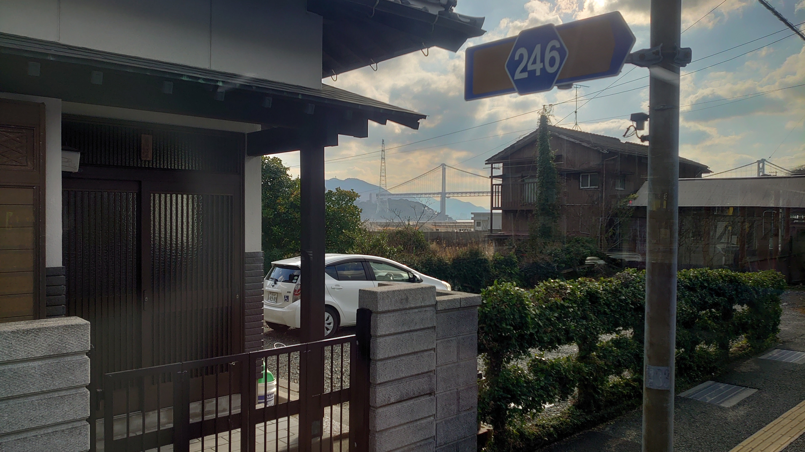

Dive into the information ocean.
Decode the real world.
DIVER OSINT CTF is a competitive OSINT.
Anyone can participate online, from beginners to experts.
What is DIVER OSINT CTF?
DIVER OSINT CTF is a real-world oriented OSINT competition.
We provide challenges suitable for participants of all levels, regardless of their country or
region.
What is OSINT?
OSINT stands for Open Source Intelligence. It's a methodology for collecting and analyzing publicly available information to derive valuable insights. Originally used in intelligence and national security fields, it's now widely applied in cybersecurity, investigative journalism, and various other domains.
What is CTF?
CTF stands for Capture The Flag, a type of information security competition often called a "white-hat hacker contest." Participants find vulnerabilities in applications, servers, or encryption systems to obtain special strings called "flags" and earn points.
What is OSINT CTF?
An OSINT CTF focuses on open-source intelligence challenges. Participants use various techniques
such as web searching, file analysis, social media investigation, and geolocation using images
and map data to solve problems.
Since it doesn't involve actual hacking, many challenges don't require special programming or
security skills, making it accessible for beginners.
For example, here are some challenges from past DIVER OSINT CTF events:
What is the name of the intersection closest to where the image was taken?
 > Answer and ExplanationsOne man said, "I once complained to the city about this intersection, 20 years ago, I think it was November. The administration is terrible these days, but those were good days." What did he contact them about? Answer why, as stated in the documents. (Image Source: Google Street View)
 > Answer and Explanations
> Answer and Explanations
On 25 October 2024, satellite imagery confirmed that the Russian-flagged RORO vessel "ANGARA", which is under sanctions, was anchored in a certain port.
> Answer and ExplanationsTomitaro Fujii (藤井富太郎), a prominent Thursday Island pearl diver, was interned during World War II. Please identify the camp from which he was released and the date of his release.
> Answer and ExplanationsAnswer the amount (in local currency) paid by the mayor of São Miguel do Guamá to a food-related company by credit card payment in January 2025.
> Answer and ExplanationsThere is a large object at 69.216246, 33.378242. Answer the project number and particular name of that object in local language.
> Answer and ExplanationsUpcoming Events
Next event: Early Summer 2026 (Online)
For beginners to experts. Jeopardy-style format
Maximum 6 members per team
Past Challenges & Writeups
Past DIVER OSINT CTF challenges are available on GitHub. While the difficulty may vary from the original due to changing search results, they provide valuable learning opportunities.
Additionally, participants have published writeups sharing various approaches to solving the challenges.
Partners
Contact
Please contact us via DM on our official X account.